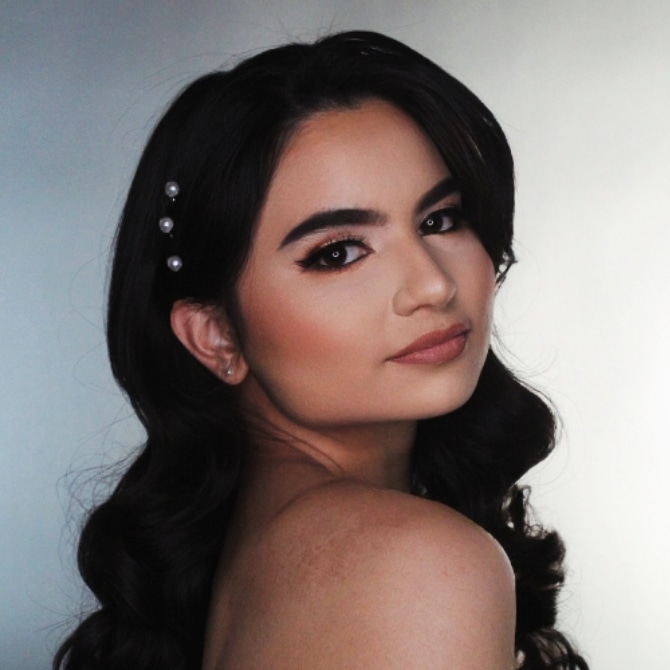

🎀 Happiest 22nd Birthday 🎂🎈 to Sundelight Megan, our Princess Mariellline 🎀
At this beautiful stage of stepping deeper into adulthood, you’ve taken yet another graceful step forward, blooming with elegance, strength, and grace. On this special day, I want to wish you not only a happy birthday but the happiest one yet—a celebration of the radiant soul you are and the brighter future you’re stepping into.
May this year bring you laughter that never fades, dreams that unfold into reality, and love that surrounds you like sunlight. You deserve every ounce of joy, every spark of magic, and every blessing life has to offer 🌞🧿💝🌻. Watching you grow into the incredible woman you are has been one of the greatest gifts of my life, and I’ll always be here, praying for your success, celebrating your victories, and holding your heart close to mine.
I completely believe in you—the way you guide and motivate me goes far beyond expectations.
In a world full of empty words, you are someone who proves everything through action.
I’ve seen you thrive for your dreams, and now I see you gradually achieving them—whether it was makeup school or now moving to Ohio for your new job.
You are my greatest inspiration, always pushing me to follow what I truly love.
And despite achieving so much in life, I have never seen even a trace of selfishness in you. You have always been kind, genuine, and full of love—something that makes me endlessly grateful for our bond.
You never judged me for my imperfections or looked down on me for my repeated mistakes. Instead, you gently corrected me while still standing firmly by my side. It’s easy to talk about “perfection in love,” but you are the true definition of it.
You love, care, forgive, and protect your boundaries with such grace. You taught me how to create boundaries of my own and how to guard my energy. You showed me how to value myself and recognize my worth—something I will forever cherish.
Even though you carry your own traumas from the past, the way you trust God and continue healing yourself amazes and motivates me to do the same with my own scars. Everyone carries pain in life, but what truly matters is how one chooses to heal—and you do it with faith, strength, and grace. For that, I am endlessly grateful to have such a heartfelt sister like you.
You are Love itself. Sometimes we may wonder why God allows love to come so easily to certain unhealed souls while we still crave it deeply. But now I understand—God is preparing us to become love ourselves. He already has someone destined for us, waiting at the right divine time. God is not withholding; He is simply being protective and extra careful with us, because He knows our hearts are precious.
I know, my dear, that at times you may feel overwhelmed by the longing to be loved too. But believe me with all my heart—something very big, beautiful, and extraordinary is waiting for us, aligned with God’s perfect timing.
I still remember so vividly the day we first met online, and yet, as the years have unfolded, our bond has grown into something so magical it feels like it was written in the stars. Five… even seven years may have passed, but with you, every moment feels timeless, as though we’ve been walking through an enchanted tale together.
Never in my life have I known a friend as genuine, as loving, and as uplifting as you. With you, I’ve never felt small or unworthy—you’ve always treated me like a treasure, reminding me of my own worth, as if placing a crown gently upon my head. For that, I will always remain endlessly grateful.
I remember so fondly the day our bond deepened—when we discovered our shared love for Barbies. It was as if our inner princesses awoke, running hand in hand through castles of imagination, wearing sparkling gowns and laughing under skies of pink stardust. Perhaps when two souls carry the same love, the universe bends to let them meet. Perhaps our hearts were always woven together with the same golden thread, destined to find their match.
Every song we created together, every little collaboration, was like weaving spells of joy and harmony. With you, my inner child danced in ballrooms of light, free and happy, surrounded by music, laughter, and fairy dust. My dearest Princess, I only hope you feel me as deeply as I feel you—like two royal hearts forever twinkling in the same constellation.
You are not just my friend—you are my best friend, my soul-sister, my sunshine 🧿💝🌻🎀.
Sometimes I feel God kept us long-distance only because if we were together in person, people would be too jealous of our bond.
But no matter what, I know the day will come when we’ll finally meet, whenever God wishes.
Until then, I’ll keep wishing, praying, and believing in your light. May you always shine this brightly and continue to bloom in everything you do.
Wishing a Joyous 22nd Birthday 🎂🎈 💖🌸
